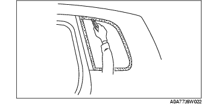

Quarter window glass installation
- • To prevent the sealant from cracking or the glass from being pushed out by air pressure if a door is closed, open all of the windows and leave them open until the sealant has hardened.
1. Cut away the old sealant using a razor so that 1-2 mm {0.040-0.078 in} thickness of sealant remains along the perimeter of the frame.

2. If the sealant has come off completely in any one place, apply some primer after degreasing, and allow it approx. 30 min to dry. Then put on new sealant to create a 2 mm {0.08 in} layer.
3. Clean and degrease wide strip along the perimeter of the ceramic part of the glass and the bonding area on the body.
4. Use only glass primer on the glass, and body primer on the body. Allow it to dry for approx. 30 min.

- • Keep the area free of dirt and grease, and do not touch the surface or the primer may not properly bond to the surface of the glass and body, which may cause leaks to occur.
5. When the primer has dried, apply 11 mm {0.4 in} height, 5 mm {0.2 in} thickness of sealant using a sealant gun. When it is not applied properly, correct it using a spatula.

6. Insert the positioning pins to the body, then install the quarter window glass.
7. Install the C-pillar trim.
8. Allow the sealant to harden completely.